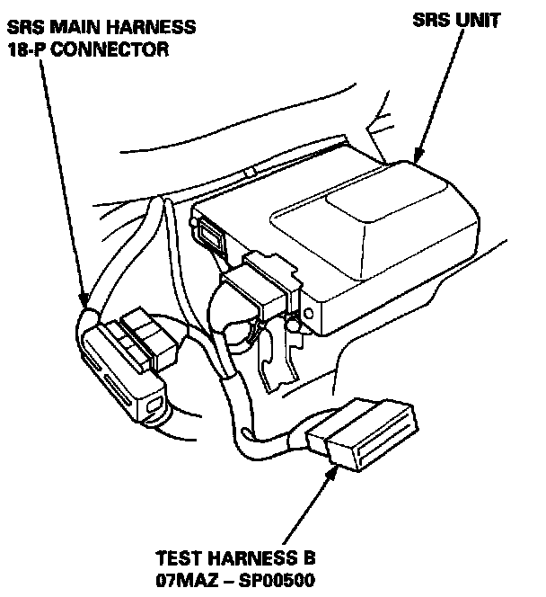
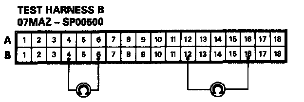
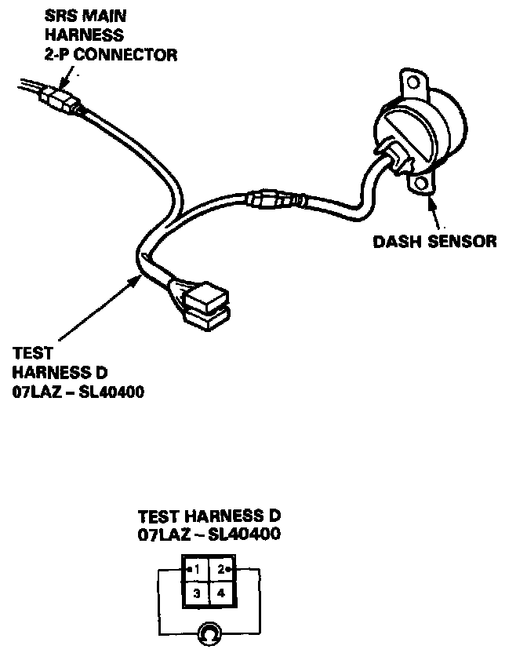

Mode C - Short in one Cowl Sensor or Open in Both Dash Sensors
MODE C - SHORT IN ONE COWL SENSOR, OR OPEN IN BOTH DASH SENSORSNOTE: The original radio has a coded theft protection circuit. Be sure to get the customer's code number before disconnecting the battery cables.
1. Disconnect the battery negative cable and then the positive cable. Then connect the short connector(s) to the airbag(s).

2. Connect Test Harness B between the SRS unit and SRS main harness 18-P connector.

3. Measure the resistance between the left dash sensor terminals B12 and B16, and between the right dash sensor terminals B4 and B6.
- If resistance is more than 5 K(ohms) for either set of terminals, go to step 4.
- If resistance is less than 5 K(ohms) for both sets of terminals, the SRS unit is faulty. Substitute a known-good SRS unit and recheck the voltages according to the chart. SRS Indicator Light Doesn't Go Off

4. Connect Test Harness D between the dash sensor and SRS main harness 2-P connector. Measure the resistance between the No.1 terminal and No.2 terminal.
- If resistance is more than 5 K(ohms), the dash sensor is faulty. Replace the dash sensor and recheck the voltages according to the chart. SRS Indicator Light Doesn't Go Off
- If resistance is less than 5 K(ohms), the SRS main harness is faulty. Replace the SRS main harness and recheck the voltages according to the chart. SRS Indicator Light Doesn't Go Off